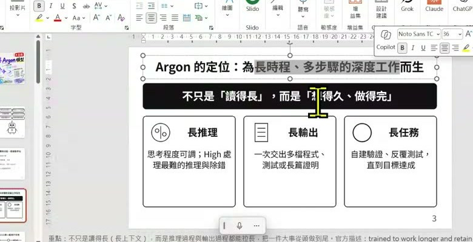
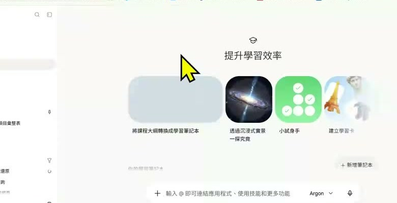
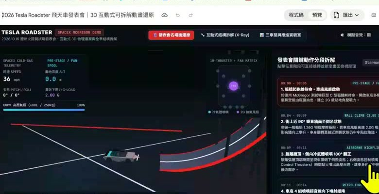

00:00–06:39
先懂定位：不是只看一次回答，而是看能否完成長任務
- 課程把 Argon 定位成長時程、多步驟工作模型：可調整思考程度，並把規劃、產出、測試與修正串成一個任務。
- 簡報強調 1M token 是輸入、思考與輸出共用的額度；大窗口不等於每次都要塞滿，仍要先定義交付物與驗證方式。
- Low／Medium／High 應依任務難度選擇：即時整理用低檔，專業工作用中檔，複雜研究或除錯才用高檔。
把焦點從「回答得多聰明」移到「能不能規劃、執行、驗證並完成一件長任務」。這份筆記整合錄影與簡報，保留時間定位，也把示範中的能力邊界與安全接手點整理成可直接套用的工作方法。
簡報所述的長上下文額度；輸入、思考與輸出共用。
Low／Medium／High 思考程度，依延遲、成本與複雜度選擇。
簡報列出的同時任務上限；實際權限仍以帳戶介面為準。



目標：請完成【具體成果】。 資料範圍：只使用【指定來源】，看不到的資料請明說。 開始前：先列執行計畫、風險與需要我決定的問題。 過程中：每完成一段就做【測試／來源核對／截圖／錯誤日誌】。 敏感步驟：登入、密碼、付款、對外發布時暫停，交由我接手。 交付：提供【檔案格式】、驗證清單、已知限制與下一步。
課程的五個技巧可以濃縮成：對齊意圖、定義驗證、多模態參考、讓模型拆分子任務、最後把踩坑寫回工作規則。
「不是只讀得長，而是想得久、做得完。」— 依課程簡報意旨整理
延伸閱讀：併入 25 頁簡報的整合筆記、每 15 秒完整版。
下載：課堂筆記 PDF · 課堂筆記 Word · 簡報整合 PDF · 簡報整合 Word · 每 15 秒完整版 PDF · ZIP 筆記包